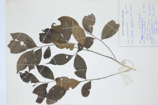
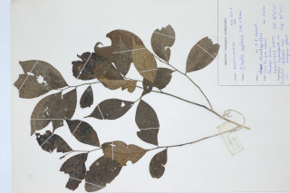

Shrubs or Small trees, up to 5 m tall.
ಪೊದೆಗಳು ಅಥವಾ ಸಣ್ಣ ಮರಗಳಾದ ಈ ಪ್ರಭೇದ 5ಮೀ ಎತ್ತರದವರಗೆ ಬೆಳೆಯುತ್ತವೆ.
5 മീറ്റര് വരെ ഉയരമുള്ള കുറ്റിച്ചെടികളായോ ചെറുമരമായോ വളരുന്നു.
குத்துச் செடி அல்லது சிறு மரம், 5 மீ. உயரம் வரை வளரக்கூடியது.
Branchlets slender, terete, rugose tomentose.
ಕಿರುಕೊಂಬೆಗಳು ತೆಳುವಾಗಿದ್ದು, ಗುಂಡಾಗಿದ್ದು, ಸುಕ್ಕು ಸುಕ್ಕಾಗಿರುವ ದಟ್ಟ ಮೃದು ತುಪ್ಪಳದಿಂದ ಆವೃತವಾಗಿರುತ್ತವೆ.
തുരുമ്പന് കമ്പിളിരോമം പോലുള്ള കനത്ത രോമാവൃതമായതും, ഉരുണ്ടതും നേര്ത്തതുമായ ഉപശാഖകള്.
சிறிய நுனிக்கிளைகள் மெலிதானது, குறுக்குவெட்டுத் தோற்றத்தில் வளையமானது, பொன் நிறமான அடர்த்தியான சிறு மென்உரோமங்களுடையது.
Leaves simple, alternate, distichous; petiole 0.1 cm long, pubescent; lamina 5-8.5 x 2.2-3.5 cm, elliptic or ovate, apex shortly bluntly acuminate, base acute, chartaceous, glabrous, midrib impressed above; secondary_nerves 4-7 pairs, slender; tertiary_nerves reticulate, not prominent.
ಎಲೆಗಳು ಸರಳ, ಪರ್ಯಾಯ ಜೋಡನಾ ವ್ಯವಸ್ಥೆಯಲ್ಲಿದ್ದು ಕಾಂಡದ ಎರಡೂ ಕಡೆ ಎದುರು ಬದರಿನ ಸಾಲಿನಲ್ಲಿರುವ ಮಾದರಿಯಲ್ಲಿರುತ್ತವೆ. ಎಲೆಪತ್ರ 5 - 8.5 × 2.2 - 3.5ಸೆಂ.ಮೀ, ಗಾತ್ರವಿದ್ದು ಅಂಡವೃತ್ತಾಕೃತಿ ಅಥವಾ ಅಂಡಾಕಾರದಲ್ಲಿದ್ದು, ಸಣ್ಣ ಹಾಗೂ ಮೊಂಡಾದ ಅಗ್ರವನ್ನುಳ್ಳ, ಕ್ರಮೇಣ ಚೂಪಾಗುವ ತುದಿ ಹಾಗೂ ಚೂಪಾದ ಬುಡಭಾಗವನ್ನು ಪಡೆದಿರುತ್ತವೆ. ಕಾಗದವನ್ನೋಲುವ ಮೇಲ್ಮೈಯನ್ನು ಪತ್ರಗಳು ಹೊಂದಿದ್ದು ರೋಮರಹಿತವಾಗಿರುತ್ತವೆ. ಮಧ್ಯನಾಳಗಳು ಪತ್ರದ ಮೇಲ್ಭಾಗದಲ್ಲಿ ಅಚ್ಚೊತ್ತಿದ ಹಾಗಿರುತ್ತವೆ. ಎರಡನೇ ದರ್ಜೆಯ ನಾಳಗಳು ತೆಳುವಾಗಿದ್ದು 4 ರಿಂದ 7 ಜೋಡಿಗಳಿರುತ್ತವೆ. ತೃತೀಯ ದರ್ಜೆಯ ನಾಳಗಳು ಜಾಲಬಂಧ ನಾಳ ವಿನ್ಯಾಸದವು ಹಾಗೂ ಹೆಚ್ಚು ಪ್ರಾಮುಖ್ಯವಾಗಿ ಕಾಣದವು.
ഇലകള് ലഘുവും, ഏകാന്തരക്രമത്തില്, തണ്ടിന്റെ ഇരുഭാഗത്ത് മാത്രമായി അടുക്കിയതുമാണ്; രോമിലമായ ഇലഞെട്ടിന് 0.1 സെ.മീ. നീളം; പത്രഫലകത്തിന് 5 മുതല് 8.5 സെ.മീ. വരെ നീളവും, 2.2 മുതല് 3.5 സെ.മീ. വരെ വീതിയും, ആകൃതി ദീര്ഘവൃത്താകാരമോ അണ്ഡാകൃതിയോ, അഗ്രം മുനപ്പില്ലാത്ത ചെറുവാലോടു കൂടിയതും, ആധാരം കൂര്ത്തതുമാണ്, കടലാസ് പോലുള്ള പ്രകൃതം, അരോമിലം, മുഖ്യസിര മുകളില് വ്യക്തമാണ്; നേര്ത്ത, 4 മുതല് 7 വരെ ജോഡി ദ്വിതീയ ഞരമ്പുകള്; ഏറെ വ്യക്തമല്ലാത്ത വിധത്തില് ജാലികാവിന്യാസം തീര്ക്കുന്ന ത്രിതീയ ഞരമ്പുകള്.
இலைகள் தனித்தவை, மாற்றுஅடுக்கமானவை, இருநெடுக்கு வரிசையிலையடுக்கம் (டைஸ்டிக்கஸ்); இலைக்காம்பு 0.1 செ.மீ. நீளமானது, சிறு மென்உரோமங்களுடையது; இலை அலகு 5-8.5 X 2.2-3.5 செ.மீ., நீள்வட்டம் அல்லது முட்டை வடிவம், அலகின் நுனி அதிக்கூரியதுடன் முனை மழுங்கியது, அலகின் தளம் கூர்மையானது, சார்ட்டேசியஸ், கீழ்பரப்பு உரோமங்களற்றது, மையநரம்பு மேற்பரப்பில் அலகின் மேற்பரப்பைவிட பள்ளமானது; இரண்டாம் நிலை நரம்புகள் 4-7 ஜோடிகள், மெலிதானது; மூன்றாம் நிலை நரம்புகள் வலைப்பின்னல் போன்றது, தெளிவற்றது.
Flowers solitary or 2-3 together, axillary or extra-axillary; pedicels 1-2 cm, pubescent.
ಗೋಳಾಕಾರದಲ್ಲಿರುವ ಬೆರ್ರಿಗಳು ಒಂದರಿಂದ ಎರಡು ಬೀಜಗಳನ್ನು ಹೊಂದಿರುತ್ತವೆ ಹಾಗೂ ಸಾಮೂಹಿಕವಾಗಿರುತ್ತವೆ.
പൂക്കള് ഒറ്റക്കായോ രണ്ടോ മൂന്നോ എണ്ണം ഒന്നിച്ച് കക്ഷങ്ങളിലോ അപകക്ഷീയമായോ ഉണ്ടാകുന്നു; രോമിലമായ പൂഞെട്ടിന് 1 മുതല് 2 സെ.മീ. വരെ നീളം.
மலர்கள் தனியானது அல்லது 2-3 மலர்கள் கொத்தாக காணப்படும், இலைக்கோணங்களில் அமைந்தவை அல்லது அதற்கு சற்று மேல் அமைந்தது; மலர்காம்பு 1.2 மென்சிறு உரோமங்களுடையது.
Clustered 1-2 seeded berries, globose.
ഒന്നോ രണ്ടോ വിത്തോടുകൂടിയ, ഗോളാകാരത്തിലുള്ള സരസഫലങ്ങള് കൂട്ടമായുണ്ടാകുന്നു.
கொத்தான 1-2 விதையுள்ள முழுச்சதைகனி (பெர்ரி), உருண்டையானது.
 
